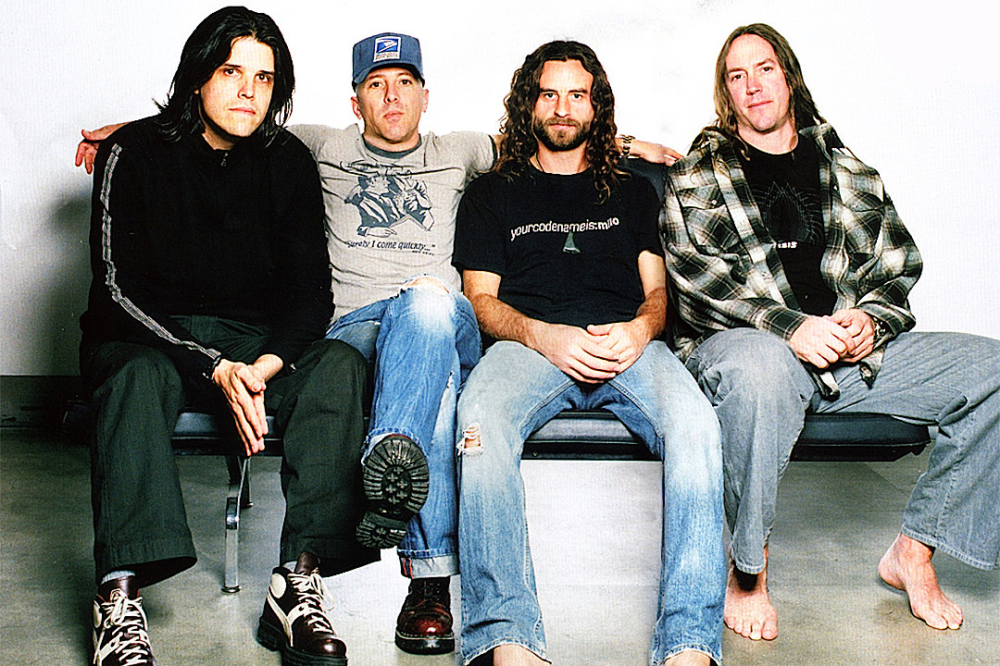

The Beginning of the Band
Band members moved to Los Angeles in the 80's. At first, Maynard Keenan and Adam Jones met each other through a mutual friend. They all worked in different jobs before that.
After a while, Danny Carey offered to play in the band, because he felt bad that no other drummer would join the band.
Their first album, called Undertow, was marked with heavy metal style, which was going to change forever through subsequent albums.
"If I'd been ranting and raving for years, you wouldn't be listening to me right now"
Interesting Facts
- Tool has won four Grammy Awards, performing worldwide tours
- Danny Carey doesn't use click track on stage while playing drums
- Adam Jones created special effects for several notable music videos
"Recognize this as a holy gift and celebrate this chance to be
alive and breathing."
More Information
Learn more about the band on their Wikipedia page